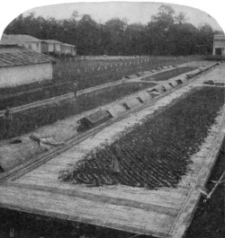
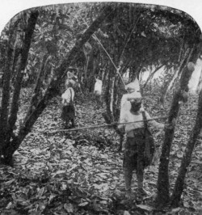

Planters have suggested to me that if the users and producers of cacao could be brought together it would be to their mutual advantage. Permit me to conceive a meeting and report an imaginary conversation:
PLANTER: You know we planters work a little in the dark. We don't know quite what to strive after. Tell me exactly what kind of cacao the manufacturers want?
MANUFACTURER: Every buyer and manufacturer has his tastes and preferences and—.
PLANTER: Don't hedge!
MANUFACTURER: The cacao of each producing area has its special characters, even as the wine from a country, and part of the good manufacturer's art is the art of blending.
PLANTER: What—good with bad?
MANUFACTURER: No! Good of one type with good of another type.
PLANTER: What do you mean exactly by good?
MANUFACTURER: By good I mean large, ripe, well-cured beans. By indifferent I mean unripe and unfermented. By abominable I mean germinated, mouldy, and grubby beans. Happily, the last class is quite a small one.
PLANTER: You don't mean to tell me that only the good cacao sells?
MANUFACTURER: Unfortunately, no! There are users of inferior beans. Practically all the cacao produced—good and indifferent—is bought by someone. Most manufacturers prefer the fine, healthy, well fermented kinds.
PLANTER: Well fermented! They have a strange way of showing their preference. Why, they often pay more for Guayaquil than they do for Grenada cacao. Yet Guayaquil is never properly fermented, whilst that from the Grenada estates is perfectly fermented.
MANUFACTURER: Agreed. Just as you would pay more for a badly-trained thoroughbred than for a well-trained mongrel. It's breed they pay for. The Guayaquil breed is peculiar; there is nothing else like it in the world. You might think the tree had been grafted on to a spice tree. It has a fine characteristic aroma, which is so powerful that it masks the presence of a high percentage of unfermented beans. However, if Guayaquil cacao was well-fermented it would (subject to the iron laws of Supply and Demand) fetch a still higher price, and there would not be the loss there is in a wet season when the Guayaquil cacao, being unfermented, goes mouldy. I think in Grenada they plant for high yield, and not for quality, for the bean is small and approaches the inferior Calabacillo breed. Its value is maintained by an amazing evenness and an uniform excellence in curing. The way in which it is prepared for the market does great credit to the planters.
PLANTER: They don't clay there, do they?
MANUFACTURER: No! and yet it is practically impossible to find a mouldy bean in Grenada estates cacao. Evidently claying is not a necessity—in Grenada.
PLANTER: Ha! ha! By that I suppose you insinuate that it is not a necessity in Trinidad, where the curing is also excellent. Or in Venezuela? What's the buyer's objection to claying?
MANUFACTURER: Simply that claying is camouflage. Actually the buyer doesn't mind so long as the clay is not too generously used. He objects to paying for beans and getting clay. However, it's really too bad to colour up with clay the black cacao from diseased pods; it might deceive even experienced brokers.
PLANTER: Ha! ha! Then it's a very sinful practice. I don't think that ever gets beyond the local tropical market. I know the merchants judge largely by "the skin," but I thought the London broker—.
MANUFACTURER: You see it's like this. Just as you associate a certain label with a particularly good brand of cigar so the planter's mark on the bag and the external appearance of the beans influence the broker by long association. But just as you cannot truly judge a cigar by the picture on the box, so the broker has to consider what is under the shell of the bean. One or two manufacturers go further, but don't trust merely to "tasting with their eyes"—they only come to a conclusion when they have roasted a sample.
PLANTER: But a buyer can get a shrewd idea without roasting, surely? You agree. Well, what exactly does he look for?
MANUFACTURER: Depends what nationality the bean is—I mean whether it was grown in Venezuela, Brazil, Trinidad, or the Gold Coast. In general he likes beans with a good "break," that is beans which, under the firm pressure of thumb and forefinger, break into small crisp nibs. Closeness or cheesiness are danger signals, warnings of lack of fermentation,—so is a slate-coloured interior. He prefers a pale, even-coloured interior,—cinnamon, chocolate, or café-au-lait colour and—.
PLANTER: One moment! I've heard before of planters being told to ferment and cure until the bean is cinnamon colour. Why, man, you couldn't get a pale brown interior with beans of the Forastero or Calabacillo type if you fermented them to rottenness.
MANUFACTURER: True! Well, if the breed on your plantation is purple Forastero, and more than half of the cacao in the world is, you must develop as much brown in the beans as possible. They should have the characteristic refreshing odour of raw cacao, together with a faint vinegary odour. The buyers much dislike any foreign smell, any mouldy, hammy, or cheesy odour.
PLANTER: And where do the foreign odours come from?
MANUFACTURER: That's debatable. Some come from bad fermentations, due to dirty fermentaries, abnormal temperatures, or unripe cacao.[7] Some come from smoky or imperfect artificial drying. Some come from mould. Unfermented cacao is liable to go mouldy, so is germinated or over-ripe cacao with broken shells. Some cacao unfortunately gets wet with sea water. There always seems to me something pathetic in the thought of finely-cured cacao being drowned in sea water as it goes out in open boats to the steamer.
PLANTER: You see, we haven't piers and jetties everywhere, and often it's a long journey to them. Well, you've told me the buyers note break, colour and aroma. Anything else?
MANUFACTURER: They like large beans, partly because largeness suggests fineness, and partly because with large beans the percentage of shell is less. Small flat beans are very wasteful and unsatisfactory; they are nearly all shell and very difficult to separate from the shell.
PLANTER: When there's a drought we can't help ourselves; we produce quantities of small flat beans.
MANUFACTURER: It must be trying to be at the mercy of the weather. However, the weather doesn't prevent the dirt being picked out of the beans. Buyers don't like more than half a per cent. of rubbish; I mean stones, dried twig-like pieces of pulp, dust, etc., left in the cacao, neither do they like to see "cobs," that is, two or more beans stuck together, nor—.
PLANTER: How about gloss?
MANUFACTURER: The beauty of a polished bean attracts, although they know the beauty is less than skin deep.
PLANTER: And washing?
MANUFACTURER: In my opinion washing is bad, leaves the shell too fragile. I believe in Hamburg they used to pay more for washed beans; although very little, I suppose less than five per cent., of the world's cacao is washed, but in London many buyers prefer "the great unwashed." However, brokers are conservative, and would probably look on unwashed Ceylon with suspicion.
PLANTER: Well, I have been very interested in everything that you have said, and I think every planter should strive to produce the very best he can, but he does not get much encouragement.
MANUFACTURER: How is that?
PLANTER: There is insufficient difference between the price of the best and the common.
MANUFACTURER: Unfortunately that is beyond any individual manufacturer's control. The price is controlled by the European and New York markets. I am afraid that as long as there is so large a demand by the public for cheap cocoas so long will there be keen competition amongst buyers for the commoner kinds of beans.
PLANTER: The manufacturer should keep some of his own men on the spot to do his buying. They would discriminate carefully, and the differences in price offered would soon educate the planters!
MANUFACTURER: True, but as each manufacturer requires cacao from many countries and districts, this would be a very costly enterprise. Several manufacturers have had their own buyers in certain places in the Tropics for some years, and it is generally agreed that this has acted as an incentive to the growers to improve the quality.[8] But in the main we have to look to the various Government Agricultural Departments to instruct and encourage the planters in the use of the best methods.
THE WORLD'S CACAO PRODUCTION.
(Mean of 5 years, 1914-1918. Average world production 295,600 tons per annum.) Diagram showing relative amounts produced by various countries. The shaded parts show production of British Possessions.
When one starts to discuss, however briefly, the producing areas, one ought first to take off one's hat to Ecuador, for so long the principal producer, and then to Venezuela the land of the original cacao, and producer of the finest criollo type. Having done this, one ought to say words of praise to Trinidad, Grenada and Ceylon for their scientific methods of culture and preparation; and, last but not least, the newest and greatest producer, the Gold Coast, should receive honourable mention. It is interesting to note that in 1918 British Possessions produced nearly half (44 per cent.) of the world's supply.
Whilst the war has not very materially hindered the increase of cacao production in the tropics, the shortage of shipping has prevented the amount exported from maintaining a steady rise. The table below, taken mainly from the "Gordian," illustrates this:
| Total in tons (1 ton = 1000 kilogrammes) | |||
| 1908 | 194,000 | 1914 | 277,000 |
| 1909 | 206,000 | 1915 | 298,000 |
| 1910 | 220,000 | 1916 | 297,000 |
| 1911 | 241,000 | 1917 | 343,000 |
| 1912 | 234,000 | 1918 | 273,000 |
| 1913 | 258,000 | 1919 | 431,000 |
The following table is compiled chiefly from Messrs. Theo. Vasmer & Co.'s reports in the Confectioners' Union.
| (1 ton = 1000 kilogrammes). | |||||
| Country. | 1914 | 1915 | 1916 | 1917 | 1918 |
| Tons. | Tons. | Tons. | Tons. | Tons. | |
| Gold Coast[1] | 53,000 | 77,300 | 72,200 | 91,000 | 66,300 |
| Brazil | 40,800 | 45,000 | 43,700 | 55,600 | 41,900 |
| Ecuador | 47,200 | 37,000 | 42,700 | 47,200 | 38,000 |
| San Thomé | 31,400 | 29,900 | 33,200 | 31,900 | 26,600 |
| Trinidad[1] | 28,400 | 24,100 | 24,000 | 31,800 | 26,200 |
| San Domingo | 20,700 | 20,200 | 21,000 | 23,700 | 18,800 |
| Venezuela | 16,900 | 18,300 | 15,200 | 13,100 | 13,000 |
| Lagos[1] | 4,900 | 9,100 | 9,000 | 15,400 | 10,200 |
| Grenada[1] | 6,100 | 6,500 | 5,500 | 5,500 | 6,700 |
| Fernando Po | 3,100 | 3,900 | 3,800 | 3,700 | 4,200 |
| Ceylon[1] | 2,900 | 3,900 | 3,500 | 3,700 | 4,000 |
| Jamaica[1] | 3,800 | 3,600 | 3,400 | 2,800 | 3,000 |
| Surinam | 1,900 | 1,700 | 2,000 | 1,900 | 2,500 |
| Cameroons | 1,200 | 2,400 | 3,000 | 2,800 | 1,300 |
| Haiti | 2,100 | 1,800 | 1,900 | 1,500 | 2,300 |
| French Cols. | 1,800 | 1,900 | 1,600 | 2,200 | 1,700 |
| Cuba | 1,800 | 1,700 | 1,500 | 1,500 | 1,000 |
| Java | 1,600 | 1,500 | 1,500 | 1,600 | 800 |
| Samoa | 1,100 | 900 | 900 | 1,200 | 800 |
| Togo | 200 | 300 | 400 | 1,600 | 1,000 |
| St. Lucia[1] | 700 | 800 | 700 | 600 | 500 |
| Belgian Congo | 500 | 600 | 800 | 800 | 900 |
| Dominica[1] | 450 | 550 | 300 | 300 | 300 |
| St. Vincent[1] | 100 | 100 | 75 | 50 | 75 |
| Other countries | 3,200 | 3,000 | 3,500 | 3,500 | 3,500 |
| Total | 275,900 | 296,100 | 295,400 | 344,000 | 275,600 |
| Total British Empire | 102,000 | 128,000 | 120,000 | 153,000 | 119,000 |
In the map of South America given on p. 89 the principal cacao producing areas are marked. Their production in 1918 was as follows:
| Country. | Metric Tons.[2] | Percentage of World's production. |
| Brazil | 41,865 | 15.4 |
| Ecuador | 38,00 | 14.0 |
| (Guayaquil alone 34,973 tons) | ||
| Venezuela | 13,000 | 5.0 |
| Surinam | 2,468 | 0.9 |
| British Guiana | 20 | 0.01 |
| South American Total | 95,353 tons | 35.31 per cent. |
|  |  |
|
RAKING CACAO BEANS ON THE DRIERS. |
GATHERING CACAO PODS IN ECUADOR. |
|
(La Clementina Plantation, Ecuador.) |
|
ECUADOR.
Arriba and Machala Cacaos.—In Ecuador, for many years the chief producing area of the world, dwell the cacao kings, men who possess very large and wild cacao forests, each containing several million cacao trees. The method of culture is primitive, and no artificial manures are used, yet for several generations the trees have given good crops and the soil remains as fertile as ever. The two principal cacaos are known as Arriba and Machala, or classed together as Guayaquil after the city of that name. Guayaquil, the commercial metropolis of the Republic of Ecuador, is an ancient and picturesque city built almost astride the Equator. Despite the unscientific cultural methods, and the imperfect fermentation, which results in the cacao containing a high percentage of unfermented beans and not infrequently mouldy beans also, this cacao is much appreciated in Europe and America, for the beans are large and possess a fine strong flavour and characteristic scented aroma. The amount of Guayaquil cacao exported in 1919 was 33,209 tons.
An interesting experiment was made in 1912, when a protective association known as the Asociacion de Agricultores del Ecuador was legalised. This collects half a golden dollar on every hundred pounds of cacao, and by purchasing and storing cacao on its own account whenever prices fall below a reasonable minimum, attempts in the planter's interest to regulate the selling price of cacao. Unfortunately, as cacao tends to go mouldy when stored in a damp tropical climate, the Asociacion is not an unmixed blessing to the manufacturer and consumer.
BRAZIL.
Parâ and Bahia Cacaos.—Brazil has made marked progress in recent years, and has now overtaken Ecuador in quantity of produce; the cacao, however, is quite different from, and not as fine as, that from Guayaquil. The principal cacao comes from the State of Bahia, where the climate is ideal for its cultivation. Indeed so perfect are the natural conditions that formerly no care was taken in cacao production, and much of that gathered was wild and uncured. During the last decade there has been an improvement, and this would, doubtless, be more noteworthy if the means of transport were better, for at present the roads are bad and the railways inadequate; hence most of the cacao is brought down to the city of Bahia in canoes. Nevertheless, Bahia cacao is better fermented than the peculiar cacao of Pará, another important cacao from Brazil, which is appreciated by manufacturers on account of its mild flavour. Bahia exported in 1919 about 51,000 tons of cacao.
VENEZUELA.
Caracas, Carupano and Maracaibo Cacaos.—Venezuela has been called "the classic home of cacao," and had not the chief occupation of its inhabitants been revolution, it would have retained till now the important position it held a hundred years ago. It is in this enchanted country (it was at La Guayra in Caracas, as readers of Westward Ho! will remember, that Amyas found his long-sought Rose) that the finest cacao in the world is produced: the criollo, the bean with the golden-brown break. The tree which produces this is as delicate as the cacao is fine, and there is some danger that this superb cacao may die out—a tragedy which every connoisseur would wish to avert.
The Gordian estimates that Venezuela sent out from her three principal ports in 1919 some 16,226 tons of cacao.
In the map of South America the principal West Indian islands producing cacao are marked. Their production in 1918 was as follows:
| Metric Tons. | Percentage of World's production. |
|
| Trinidad (British) | 26,177 | 9.7 |
| San Domingo | 18,839 | 7.0 |
| Grenada (British) | 6,704 | 2.5 |
| Jamaica (British) | 3,000 | 1.1 |
| Haiti | 2,272 | 0.8 |
| St. Lucia (British) | 500 | 0.2 |
| Dominica (British) | 300 | 0.1 |
| St. Vincent (British) | 70 | 0.02 |
| West Indies Total | 57,862 tons | 21.42 per cent. |
| Br. West Indies | 36,751 tons | 13.6 per cent. |
TRINIDAD AND GRENADA.[3]
Cacao was grown in the West Indies in the seventeenth century, and the inhabitants, after the destructive "blast," which utterly destroyed the plantations in 1727, bravely replanted cacao, which has flourished there ever since. The cacaos of Trinidad and Grenada have long been known for their excellence, and it is mainly from Trinidad that the knowledge of methods of scientific cultivation and preparation has been spread to planters all round the equator. The cacao from Trinidad (famous alike for its cacao and its pitch lake) has always held a high place in the markets of the world, although a year or two ago the inclusion of inferior cacao and the practice of claying was abused by a few growers and merchants. With the object of stopping these abuses and of producing a uniform cacao, there was formed a Cacao Planters' Association, whose business it is to grade and bulk, and sell on a co-operative basis, the cacao produced by its members. This experiment has proved successful, and in 1918 the Association handled the cacao from over 100 estates. We may expect to see more of these cacao planters' associations formed in various parts of the world, for they are in line with the trend of the times towards large, and ever larger, unions and combinations. Trinidad is also progressive in its system of agricultural education and in its formation of agricultural credit societies. The neighbouring island of Grenada is mountainous, smaller than the Isle of Wight and (if the Irish will forgive me) greener than Erin's Isle. The methods of cacao cultivation in vogue there might seem natural to the British farmer, but they are considered remarkable by cacao planters, for in Grenada the soil on which the trees grow is forked or tilled. Possibly from this follows the equally remarkable corollary that the cacao trees flourish without a single shade tree. The preparation of the bean receives as much care as the cultivation of the tree, and the cacao which comes from the estates has an unvaried constancy of quality, not infrequently giving 100 per cent. of perfectly prepared beans. It is largely due to this that the cacao from this small island occupies such an important position on the London market.
The cacao from San Domingo is known commercially as Samana or Sanchez. A fair proportion is of inferior quality, and is little appreciated on the European markets. The bulk of it goes to America. The production in 1919 was about 23,000 tons.
In the map of Africa the principal producing areas are marked. Their production in 1918 was as follows:
| Metric Tons. | Percentage of World's production. |
|
| Gold Coast (British) | 66,343 | 24.5 |
| San Thomé | 19,185 | 7.1 |
| Lagos (British) | 10,223 | 3.8 |
| Fernando Po | 4,220 | 1.6 |
| Cameroons | 1,250 | 0.4 |
| Togo | 1,000 | 0.4 |
| Belgian Congo | 875 | 0.3 |
| African Total | 103,096 tons | 38.1 per cent. |
| British Africa | 76,566 tons | 28.3 per cent. |
THE GOLD COAST (Industria floremus).
Accra Cacao.
The name recalls stories of a romantic and awful past, in which gold and the slave trade played their terrible part. Happily these are things of the past; so is the "deadly climate." We are told that it is now no worse than that of other tropical countries. According to Sir Hugh Clifford, until recently Governor of the Gold Coast, the "West African Climatic Bogie" is a myth, and the "monumental reputation for unhealthiness" undeserved. When De Candolle wrote concerning cacao, "I imagine it would succeed on the Guinea Coast,"[4] as the West African coast is sometimes called, he achieved prophecy, but he little dreamed how wonderful this success would be. The rise and growth of the cacao-growing industry in the Gold Coast is one of the most extraordinary developments of the last few decades. In thirty years it has increased its export of cacao from nothing to 40 per cent. of the total of the world's production.
FORESHORE AT ACCRA, WITH STACKS OF CACAO READY FOR SHIPMENT
Reproduced by permission of the Editor of "West Africa".
| Year. | Quantity. | Value. £ |
| 1891 | 0 tons (80 lbs.) | 4 |
| 1896 | 34 tons | 2,276 |
| 1901 | 980 tons | 42,837 |
| 1906 | 8,975 tons | 336,269 |
| 1911 | 30,798 tons | 1,613,468 |
| 1916 | 72,161 tons | 3,847,720 |
| 1917 | 90,964 tons | 3,146,851 |
| 1918 | 66,343 tons | 1,796,985 |
| 1919 | 177,000 tons | 8,000,000 |
CARRIERS CONVEYING BAGS OF CACAO TO SURF BOATS, ACCRA.
Reproduced by permission of the Editor of "West Africa."
The conditions of production in the Gold Coast present a number of features entirely novel. We hear from time to time of concessions being granted in tropical regions to this or that company of enterprising European capitalists, who employ a few Europeans and send them to the area to manage the industry. The inhabitants of the area become the manual wage earners of the company, and too often in the lust for profits, or as an offering to the god of commercial efficiency, the once easy and free life of the native is lost for ever and a form of wage-slavery takes its place with doubtful effects on the life and health of the workers. In defence it is pointed out that yet another portion of the earth has been made productive, which, without the initiative of the European capitalist, must have lain fallow. But in the Gold Coast the "indolent" native has created a new industry entirely native owned, and in thirty years the Gold Coast has outstripped all the areas of the world in quantity of produce. Forty years ago the natives had never seen a cacao tree, now at least fifty million trees flourish in the colony. This could not have happened without the strenuous efforts of the Department of Agriculture. The Gold Coast now stands head and shoulders above any other producing area for quantity. The problem of the future lies in the improvement of quality, and difficult though this problem be, we cannot doubt, given a fair chance, that the far-sighted and energetic Agricultural Department will solve it. Indeed, it must in justice be pointed out that already a very marked improvement has been made, and now fifty to one hundred times as much good fermented cacao is produced as there was ten years ago.[5] However, if a high standard is to be maintained, the work of the Department of Agriculture must be supplemented by the willingness of the cacao buyers to pay a higher price for the better qualities.
The phenomenal growth of this industry is the more remarkable when we consider the lack of roads and beasts of burden. The usual pack animals, horses and oxen, cannot live on the Gold Coast because of the tsetse fly, which spreads amongst them the sleeping sickness. And so the native, used as he is to heavy head-loads, naturally adopted this as his first method of transport, and hundreds of the less affluent natives arrive at the collecting centres with great weights of cacao on their heads. "Women and children, light-hearted, chattering and cheerful, bear their 60 lbs. head-loads with infinite patience. Heavier loads, approaching sometimes two hundredweight, are borne by grave, silent Hausa-men, often a distance of thirty or forty miles."
DRYING CACAO BEANS AT
MRAMRA. Reproduced by
permission from the
Imperial Institute series
of Handbooks to the
Commercial Resources
of the Tropics.
One day, not so many years ago, some more ingenious native in the hills at the back of the Coast, filled an old palm-oil barrel with cacao and rolled it down the ways to Accra. And now to-day it is a familiar sight to see a man trundling a huge barrel of cacao, weighing half a ton, down to the coast. The sound of a motor horn is heard, and he wildly turns the barrel aside to avoid a disastrous collision with the new, weird transport animal from Europe. Motor lorries have been used with great effect on the coast for some seven years; they have the advantage over pack animals that they do not succumb to the bite of the dreaded tsetse fly, but nevertheless not a few derelicts lie, or stand on their heads, in the ditches, the victims of over-work or accident.
Having brought the cacao to the coast, there yet remains the lighterage to the ocean liner, which lies anchored some two miles from the shore, rising and falling to the great rollers from the broad Atlantic. A long boat is used, manned by some twenty swarthy natives, who glory—vocally—in their passage through the dangerous surf which roars along the sloping beach. The cacao is piled high on wood racks and covered with tarpaulins and seldom shares the fate of passengers and crew, who are often drenched in the surf before they swing by a crane in the primitive mammy chair, high but not dry, on board the hospitable Elder Dempster liner.
SAN THOMÉ (AND PRINCIPE).
We now turn from the Gold Coast and the success of native ownership to another part of West Africa, a scene of singular beauty, where the Portuguese planters have triumphed over savage nature.
Two lovely islands, San Thomé and its little sister isle of Principe, lie right on the Equator in the Gulf of Guinea, about two hundred miles from the African mainland. A warm, lazy sea, the sea of the doldrums, sapphire or turquoise, or, in deep shaded pools, a radiant green, joyfully foams itself away against these fairy lands of tossing palm, dense vegetation, rushing cascades, and purple, precipitous peaks. A soil of volcanic origin is covered with a rich humus of decaying vegetation, and this, with a soft humid atmosphere, makes an ideal home for cacao.
The bean, introduced in 1822, was not cultivated with diligence till fifty years ago. To-day the two islands, which together have not half the area of Surrey, grow 32,000 metric tons of cacao a year, or about one-tenth of the world's production.[6] The income of a single planter, once a poor peasant, has amounted to hundreds of thousands sterling.
Dotted over the islands, here nestling on a mountain side, there overlooking some blue inlet of the sea, are more than two hundred plantations, or rocas, whose buildings look like islands in a green sea of cacao shrubs, above which rise the grey stems of such forest trees as have been left to afford shade.